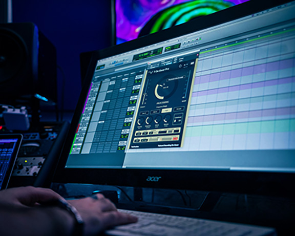

VANTADOOM
Listen Now

Listen Now
Vanta is the vision behind Tristan Schwekendiek a tech college student who happens to have a nact for creating awesome beats and samples. Tristan has been sampling and creating music for quite a while however, he was recently able to realease his first ever album VantaDOOM which premiered on youtube October 31, 2025. His creativity and inspiration from MFDoom really shines through in this album and I am grateful for the oppurtunity to be able to showcase his work.
